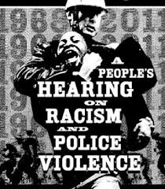

|
Oscar Grant Committee
Against Police Brutality and State Repression
|
The Pedie Perez case
Statement From Richmond Police Chief Magnus (PDF)
Eugene Ruyle letter to Richmond City Council (PDF)
RPD Letter to East Bay Veterans for Peace (PDF)
OGC Statement For Martin Luther King Day 2015:
The Rev. Dr. Martin Luther King, Jr. Was Murdered
By the State
Every year on Martin Luther King day we hear the same thing: “I have a
dream....” It's a beautiful speech, a moving speech, a speech that
reminds us how much we want human solidarity that's bigger and deeper
than our shades of skin. But the Rev. Dr. King's vision and activism
were bigger and deeper than racial harmony, and there's a lot more to
his legacy – and his assassination – than the ruling class and their
bought-and-paid-for media want us to know.
We all know the official story that James Earl Ray shot the Rev. Dr.
King. But a 1999 civil trial verdict in Memphis found that agents of
the City of Memphis, the State of Tennessee, and the U.S. Government
conspired to assassinate him, contracting with the New Orleans Mafia to
do the hit (a Military Intelligence shooter team was also there as a
backup, but left without firing a shot). William F. Pepper, a lawyer
who worked with King and brought the lawsuit on behalf of the King
family, worked for over twenty-five years building the case. He
collected sworn testimony from Special Forces soldiers who were there
as well as from the man who hid the actual murder weapon, other
witnesses, and the report of the House Select Committee on
Assassinations.
King did not call for racial equality alone. He opposed the Vietnam
war, calling the U.S. Government “the greatest purveyor of violence on
earth.” He was organizing a national Poor Peoples' Campaign including a
tent city of 500,000 in the shadow of the Washington Memorial. He
called for a general strike in Memphis in solidarity with the
sanitation workers. He even planned to run for President on an
anti-war, anti-capitalist platform. Others were organizing for these
ends as well. The ruling class was alarmed, and ramped up its
surveillance and infiltration: the army put over 1500 plainclothes
agents in “dissenting” organizations of all kinds, with King's Southern
Christian Leadership Conference a high priority. The 902nd Military
Intelligence Group began planning assassinations of key black leaders
in 1963. Military Intelligence had been spying on King's family for
three generations, and tasked three intelligence groups to infiltrate
the Poor Peoples' Campaign. Big oilmen like Lyndon Johnson, H. L. Hunt,
and Clint Murchison, along with their bankers and lawyers, would lose a
lot of money if the war ended. Hunt and J. Edgar Hoover plotted to
neutralize King's influence, with Hoover saying they must “completely
silence” him. The intelligence agencies had a long-standing
relationship with the Mafia, selling them guns stolen from National
Guard armories for resale in Latin America, splitting the profits to
fund covert operations.
One witness actually had King in his crosshairs at a march In Memphis,
but King abruptly turned, spoiling the shot. The government had offered
a contract to one Mafia family, but never struck a deal. Finally a
Memphis man connected with Carlos Marcello's New Orleans Mafia took the
contract and arranged the hit.
To avoid a trial, the government framed James Earl Ray and bullied him
into taking a plea bargain. But Ray denied having shot King, and other
witnesses corroborate this.
We honor the Rev. Dr. Martin Luther King not only as a great civil
rights leader, but as a martyr for civil rights, workers, and
peace-loving people everywhere, murdered by the covert capitalist state.
[Source: William F. Pepper, An Act of State (London/New York: Verso
Press 2003)]
|  |
| Click image to view PDF |
You can download the Motion, Declaration and the independent report on
the October 25, 2011 raid on Occupy Oakland by the Oakland Police
Department below:
Motion
for federal receivership of OPD (PDF)
Declaration
of federal receivership of OPD (PDF)
Frazier
Group report (PDF) (independent report on OPD commissioned by the
City Council)